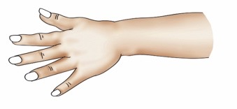
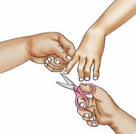
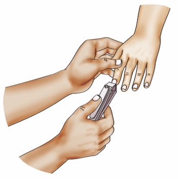
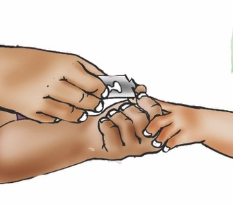
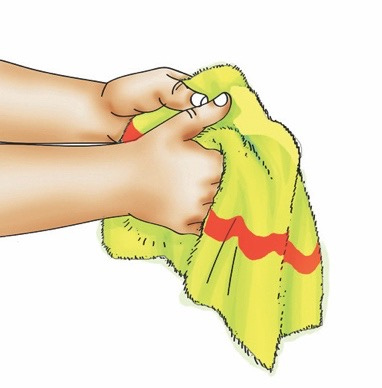
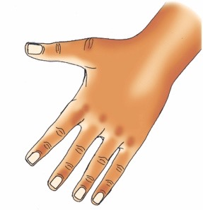

Ninakata na kusafisha kucha.
Paka wa katuni akiongea na kuelekeza kuhusu kusafisha kucha.

Ninakata na kusafisha kucha za mikono kwa kutumia vifaa mbalimbali.

Vidole vya mikono vyenye kucha ndefu.
Umeoneshwa mkono wenye kucha ndefu.
Ninakata kucha za vidole vya mikono kwa kutumia mkasi.
Zimeoneshwa picha za vidole vya mkono zikikatwa kwa mkasi.
Ninakata kucha za vidole vya mikono kwa kutumia kikata kucha.
Zimeoneshwa picha za vidole vya mkono zikikatwa kwa kikata kucha.
Ninakata kucha za vidole vya mikono kwa kutumia wembe.
Zimeoneshwa picha za vidole vya mkono zikikatwa kwa wembe.Ninasafisha kucha za vidole vya mikono kwa brashi, maji safi na sabuni.
Zimeoneshwa picha za kucha za vidole vya mikono zikisafishwa kwa brashi, maji safi na sabuni.
Ninakausha mikono kwa taulo safi.
Imeoneshwa picha ya mikono ikikaushwa kwa taulo safi.
Kucha za vidole vya mikono zilizokatwa vizuri na kusafishwa kwa maji safi.
Umeoneshwa mkono wenye kucha zilizokatwa vizuri na kusafishwa kwa maji safi.Swali
Kwa nini ni muhimu kukata na kusafisha kucha zako?